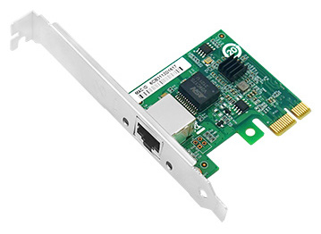
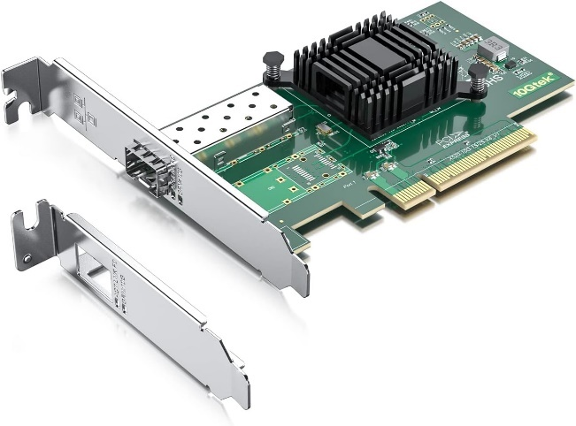
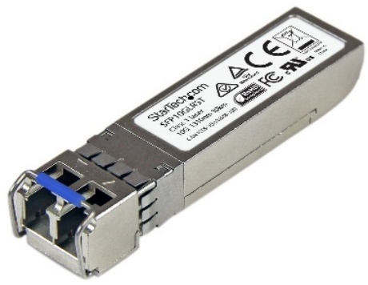

De netwerkkabel (koper of glasvezel) moet je natuurlijk ergens mee verbinden en dat is uiteraard met een netwerkkaart, ook wel netwerkinterface genoemd.
De meeste klassieke netwerkkaarten op computers en industriële controllers ondersteunen snelheden van 10/100/1000 Mbps (1 Gbps) via een RJ-45 connector. Maar door de toenemende vraag naar hogere datasnelheden, ook in industriële toepassingen, zien we niet alleen vaker ondersteuning voor hogere snelheden zoals 2.5 Gbps, 5 Gbps en zelfs 10 Gbps maar ook voor glasvezel.
 |  |
| Netwerkkaart voor koper via RJ45 | Netwerkkaart voor glasvezel (of koper) via SFP |
Bij glasvezel komt er echter nog een extra component bij want je kan een glasvezelkabel niet rechtstreeks inpluggen op een netwerkkaart. Hiervoor heb je nog een SFP module nodig.

Hierdoor kun je flexibel kiezen voor verschillende snelheden zoals 1 Gbps of 10 Gbps, en voor verschillende types glasvezelverbindingen zoals singlemode of multimode, met connectoren als LC of SC.
Zelfs koperkabels worden ondersteund. Op deze manier blijft de netwerkkaart hetzelfde, terwijl je zelf bepaalt hoe je de verbinding tot stand brengt. Omdat er verschillende soorten SFP-modules bestaan, is het belangrijk om bij de aankoop goed te controleren of de module compatibel is met de rest van je netwerkapparatuur.
Let wel: de werkelijke snelheid van een netwerkverbinding wordt altijd bepaald door de zwakste schakel in de keten. Je kunt bijvoorbeeld een cat8 kabel gebruiken die tot 40 Gbps aankan, maar als je netwerkkaart slechts 1 Gbps ondersteunt, dan blijft dat ook de maximumsnelheid van de verbinding.
Daarom is het belangrijk dat alle onderdelen in het netwerk, van kabels tot netwerkkaarten, switches en routers, op elkaar afgestemd zijn en dezelfde snelheid ondersteunen.